6770 アルプスアルパイン シグナル 2026-02-12 / P3 警戒足 → 再高値更新1回 → STOP引き上げ
CASE1: -1.6% / CASE2: +7.9% / CASE3: +6.8%
CASE1: -1.6% / CASE2: +7.9% / CASE3: +6.8%
near.max_position_in_range = 0.65 で発生した ENTRY_CANDIDATE
32 件（仮想ENTRY成立 32 件）／
生成日 2026-08-11
near.max_position_in_range = 0.65 /
initial_stop = range_lower × 0.995 の3点のみ。MANUAL_EXIT_REVIEW 用）。| 区分 | 指標 | 値 | 注記 |
|---|---|---|---|
| INITIAL_HOLD | 対象イベント数 | 32 | near.max_position_in_range=0.65 で発生した ENTRY_CANDIDATE。前回と同一 |
| INITIAL_HOLD | 仮想ENTRYできた件数 | 32/32 (100%) | ENTRY価格はシグナル翌営業日の始値 |
| INITIAL_HOLD | 上限を終値突破する前にSTOPした件数 | 10/32 (31%) | TREND_HOLD へ到達しなかった件 |
| INITIAL_HOLD | 元レンジ上限を終値突破した件数（TREND_HOLD到達） | 22/32 (69%) | |
| INITIAL_HOLD | 高値だけ上限を超えたが終値では超えなかった件数 | 10/32 (31%) | 状態遷移させていない（§3） |
| WARNING | 上限突破後にWARNINGが発生した件数 | 22/22 (100%) | 警戒足の総数 31 本（前回は ENTRY 直後からの全陰線で 175 本） |
| WARNING | 1イベントあたりの警戒足本数（中央値） | 1.0 本 | |
| WARNING | 上限突破からWARNING発生までの営業日数（中央値） | 1 日 | 最短 1 日 / 最長 4 日 |
| WARNING | WARNING発生時の含み益率（中央値） | +1.00% | 最初の警戒足の終値ベース。仮想ENTRY価格基準 |
| WARNING | warning_low を先に割った警戒足 | 25/31 (81%) | |
| WARNING | reference_high を先に更新した警戒足 | 3/31 (10%) | |
| WARNING | 同日に両方到達で順序不明の警戒足 | 3/31 (10%) | AMBIGUOUS_WARNING_ORDER。CASE2 の EXIT 有無がこの順序に依存する |
| WARNING | 決着前に active_stop へ到達した警戒足 | 0/31 (0%) | |
| WARNING | 追跡終端まで決着しなかった警戒足 | 0/31 (0%) | |
| WARNING | warning_low を寄りでギャップ割れした警戒足 | 17/28 (61%) | 分母は warning_low を割った警戒足。warning_low での約定は仮定できない（§6A） |
| WARNING | 警戒足が上限突破の翌営業日に出た件数 | 14/22 (64%) | 早すぎる警戒足の目安 |
| REHIGH / TRAILING | REHIGH_CONFIRMED が発生した件数 | 9/32 (28%) | 再高値更新の総数 12 回 |
| REHIGH / TRAILING | trail stop を1回以上引き上げられた件数 | 8/32 (25%) | 前回（既存 fractal 利用）は 参考A 2/32 / 参考B 10/32 |
| REHIGH / TRAILING | trail stop を2回以上引き上げられた件数 | 2/32 (6%) | |
| REHIGH / TRAILING | 初期STOPからの引き上げ幅（中央値） | +7.47% | 最大 +10.75% |
| REHIGH / TRAILING | 押し安値の確定が既存 fractal より何日早いか（中央値） | -0 日 | 正なら状態機械の方が早い／負なら fractal の方が早い。最小 -4 日 / 最大 1 日（同じ安値を fractal も認めた 6 件が分母） 比較用で状態機械には使っていない |
| REHIGH / TRAILING | 既存 fractal がそもそも押し安値と認めなかった件数 | 6/12 (50%) | 状態機械が確定した押し安値のうち、fractal の pivot 条件を満たさないもの |
| REHIGH / TRAILING | 同日にSTOP到達と再高値更新で順序不明 | 0/32 (0%) | 当日安値が active_stop 以下なら押し安値も同水準以下になるため、どちらの順でも撤退水準は変わらない |
| REHIGH / TRAILING | warning_low を割ったのに WARNING に留まった件数 | 13/32 (41%) | 解釈(b) の副作用。CASE3 の構造的な弱点 |
| 利益保持 | CASE1 初期STOPのみ（前回と同じ）: 仮想EXIT件数 | 31/32 (97%) | 残りは追跡終端で保有継続 |
| 利益保持 | CASE1 初期STOPのみ（前回と同じ）: 仮想リターン中央値 | -4.51% | 仮想ENTRY価格（翌日始値）基準。約定価格は保証されない |
| 利益保持 | CASE1 初期STOPのみ（前回と同じ）: 最大含み益の中央値 | +4.29% | |
| 利益保持 | CASE1 初期STOPのみ（前回と同じ）: 吐き出し幅の中央値 | 9.58pt | 最大含み益 − 最終リターン |
| 利益保持 | CASE1 初期STOPのみ（前回と同じ）: 保有日数の中央値 | 8 日 | |
| 利益保持 | CASE1 初期STOPのみ（前回と同じ）: +5%以上まで上昇後に損失 | 12/32 (38%) | |
| 利益保持 | CASE1 初期STOPのみ（前回と同じ）: +10%以上から利益の過半を失った | 6/32 (19%) | 「大半＝過半」を数式にしただけの集計定義。売買閾値ではない |
| 利益保持 | CASE2 warning_low 下抜けで利確: 仮想EXIT件数 | 32/32 (100%) | 残りは追跡終端で保有継続 |
| 利益保持 | CASE2 warning_low 下抜けで利確: 仮想リターン中央値 | -1.82% | 仮想ENTRY価格（翌日始値）基準。約定価格は保証されない |
| 利益保持 | CASE2 warning_low 下抜けで利確: 最大含み益の中央値 | +4.18% | |
| 利益保持 | CASE2 warning_low 下抜けで利確: 吐き出し幅の中央値 | 4.57pt | 最大含み益 − 最終リターン |
| 利益保持 | CASE2 warning_low 下抜けで利確: 保有日数の中央値 | 5 日 | |
| 利益保持 | CASE2 warning_low 下抜けで利確: +5%以上まで上昇後に損失 | 3/32 (9%) | |
| 利益保持 | CASE2 warning_low 下抜けで利確: +10%以上から利益の過半を失った | 1/32 (3%) | 「大半＝過半」を数式にしただけの集計定義。売買閾値ではない |
| 利益保持 | CASE3 トレーリング（warning_low では降りない）: 仮想EXIT件数 | 31/32 (97%) | 残りは追跡終端で保有継続 |
| 利益保持 | CASE3 トレーリング（warning_low では降りない）: 仮想リターン中央値 | -3.77% | 仮想ENTRY価格（翌日始値）基準。約定価格は保証されない |
| 利益保持 | CASE3 トレーリング（warning_low では降りない）: 最大含み益の中央値 | +4.29% | |
| 利益保持 | CASE3 トレーリング（warning_low では降りない）: 吐き出し幅の中央値 | 9.00pt | 最大含み益 − 最終リターン |
| 利益保持 | CASE3 トレーリング（warning_low では降りない）: 保有日数の中央値 | 8 日 | |
| 利益保持 | CASE3 トレーリング（warning_low では降りない）: +5%以上まで上昇後に損失 | 6/32 (19%) | |
| 利益保持 | CASE3 トレーリング（warning_low では降りない）: +10%以上から利益の過半を失った | 5/32 (16%) | 「大半＝過半」を数式にしただけの集計定義。売買閾値ではない |
| EXIT種別 | CASE1 初期STOPのみ（前回と同じ）: INITIAL_STOP_EXIT | 31/32 (97%) | |
| EXIT種別 | CASE1 初期STOPのみ（前回と同じ）: DATA_END_OPEN | 1/32 (3%) | |
| EXIT種別 | CASE2 warning_low 下抜けで利確: WARNING_LOW_EXIT_CANDIDATE | 21/32 (66%) | |
| EXIT種別 | CASE2 warning_low 下抜けで利確: INITIAL_STOP_EXIT | 10/32 (31%) | |
| EXIT種別 | CASE2 warning_low 下抜けで利確: TRAIL_STOP_EXIT | 1/32 (3%) | |
| EXIT種別 | CASE3 トレーリング（warning_low では降りない）: INITIAL_STOP_EXIT_AFTER_BREAKOUT | 14/32 (44%) | |
| EXIT種別 | CASE3 トレーリング（warning_low では降りない）: INITIAL_STOP_EXIT | 10/32 (31%) | |
| EXIT種別 | CASE3 トレーリング（warning_low では降りない）: TRAIL_STOP_EXIT | 7/32 (22%) | |
| EXIT種別 | CASE3 トレーリング（warning_low では降りない）: DATA_END_OPEN | 1/32 (3%) | |
| 経路の分類 | P0 上限を終値突破せずSTOP（TREND_HOLDへ到達せず） | 10/32 (31%) | |
| 経路の分類 | P2 警戒足 → warning_low 下抜け（再高値更新なし） | 13/32 (41%) | |
| 経路の分類 | P3 警戒足 → 再高値更新1回 → STOP引き上げ | 7/32 (22%) | |
| 経路の分類 | P4 再高値更新2回以上（複数回の押し安値形成） | 2/32 (6%) | |
| フラグ | CASE2 の方が CASE3 より有利な撤退になった | 18/32 (56%) | |
| フラグ | warning_low を寄りでギャップ割れ（約定を仮定できない） | 14/32 (44%) | |
| フラグ | 警戒足が上限突破の翌営業日に出た | 14/32 (44%) | |
| フラグ | warning_low を割ったのに WARNING に留まり続けた（解釈(b)） | 13/32 (41%) | |
| フラグ | CASE1 で +5%以上まで上昇後に損失 | 12/32 (38%) | |
| フラグ | active_stop を1回以上引き上げた | 8/32 (25%) | |
| フラグ | CASE3 の方が CASE1 より有利な撤退になった | 7/32 (22%) | |
| フラグ | 同日に warning_low 下抜けと再高値更新（順序不明） | 3/32 (9%) | |
| フラグ | active_stop を2回以上引き上げた | 2/32 (6%) | |
| 解釈の感度 | 上限突破日・再高値更新日そのものが陰線だった回数 | 5 | 解釈(a)で同日採用にしていたら、この回数だけ警戒足が増えていた |
INITIAL_HOLD │ 終値 > 元レンジ上限 (RANGE_UPPER_CLOSE_BREAK) ▼ TREND_HOLD ◄────────────────────────────────────┐ │ 上限突破後、最初の陰線 (WARNING_CANDLE) │ │ ※判定は翌営業日から開始（解釈 a） │ ▼ │ WARNING ──────────────┐ │ │ 高値 > reference_high (REHIGH_CONFIRMED) │ │ → 押し安値確定・STOP引き上げ (TRAIL_STOP_RAISED) └──────────────────────────────────────────────┘ │ 安値 < warning_low (WARNING_LOW_BREAK) └─► 利確候補（CASE2 のみ EXIT。CASE3 は解釈(b)により WARNING に留まる） （いずれの状態でも）安値 <= active_stop → CLOSED（EXIT）
| 現在の状態 | イベント | 次の状態 | 条件 | 備考 |
|---|---|---|---|---|
| INITIAL_HOLD | RANGE_UPPER_CLOSE_BREAK | TREND_HOLD | 終値 > 元レンジ上限 | 警戒足の判定は翌営業日から開始（解釈a） |
| INITIAL_HOLD | （active_stop到達） | CLOSED / INITIAL_STOP_EXIT | 安値 <= active_stop（= initial_stop） | |
| TREND_HOLD | WARNING_CANDLE | WARNING | 上限突破後で最初の陰線（終値<始値） | 警戒足は1本だけ拾い、以後は置き換えない（§9） |
| TREND_HOLD | （active_stop到達） | CLOSED / INITIAL_STOP_EXIT_AFTER_BREAKOUT | 安値 <= active_stop | 解釈(c)。4つ目のEXIT種別 |
| WARNING | WARNING_LOW_BREAK | WARNING（CASE2のみEXIT） | 安値 < warning_low | CASE3は解釈(b)によりWARNINGへ留まる |
| WARNING | REHIGH_CONFIRMED | TREND_HOLD | 高値 > reference_high | 押し安値確定・STOP引き上げ（TRAIL_STOP_RAISED）を伴う |
| WARNING | （active_stop到達） | CLOSED / TRAIL_STOP_EXIT または INITIAL_STOP_EXIT_AFTER_BREAKOUT | 安値 <= active_stop | 引き上げ済みなら TRAIL_STOP_EXIT |
same_day_bearish_at_trend_entry として件数だけ記録する。INITIAL_STOP_EXIT_AFTER_BREAKOUT として4つ目のEXIT種別を置いた。1行1イベント。列は CASE1（初期STOPのみ）/ CASE2（warning_low利確）/ CASE3（トレーリング）の順。「経路」は classify_path() による分析用の区分ラベルで、売買ルールではない。
| 銘柄 | 経路 | CASE1種別 | CASE1日 | CASE1リターン | CASE1最大含み益 | CASE1吐き出し | CASE2種別 | CASE2日 | CASE2リターン | CASE2最大含み益 | CASE2吐き出し | CASE3種別 | CASE3日 | CASE3リターン | CASE3最大含み益 | CASE3吐き出し |
|---|---|---|---|---|---|---|---|---|---|---|---|---|---|---|---|---|
| 6770 アルプスアルパイン 2026-02-12 | P3 警戒足 → 再高値更新1回 → STOP引き上げ | 初期STOP（突破前） | D+11 | -1.6% | +10.3% | 11.92pt | warning_low利確（CASE2） | D+8 | +7.9% | +10.3% | 2.39pt | trail STOP | D+9 | +6.8% | +10.3% | 3.48pt |
| 9107 川崎汽船 2026-02-12 | P0 上限を終値突破せずSTOP（TREND_HOLDへ到達せず） | 初期STOP（突破前） | D+2 | -1.0% | +1.0% | 2.01pt | 初期STOP（突破前） | D+2 | -1.0% | +1.0% | 2.01pt | 初期STOP（突破前） | D+2 | -1.0% | +1.0% | 2.01pt |
| 6770 アルプスアルパイン 2026-02-16 | P3 警戒足 → 再高値更新1回 → STOP引き上げ | 初期STOP（突破前） | D+9 | -2.5% | +9.4% | 11.86pt | warning_low利確（CASE2） | D+6 | +7.0% | +9.4% | 2.37pt | trail STOP | D+7 | +5.9% | +9.4% | 3.45pt |
| 1812 鹿島建設 2026-02-18 | P0 上限を終値突破せずSTOP（TREND_HOLDへ到達せず） | 初期STOP（突破前） | D+8 | -5.7% | +3.0% | 8.68pt | 初期STOP（突破前） | D+8 | -5.7% | +3.0% | 8.68pt | 初期STOP（突破前） | D+8 | -5.7% | +3.0% | 8.68pt |
| 2644 GX 半導体関連-日 2026-02-18 | P2 警戒足 → warning_low 下抜け（再高値更新なし） | 初期STOP（突破前） | D+8 | -4.5% | +6.5% | 10.95pt | warning_low利確（CASE2） | D+5 | +2.1% | +6.5% | 4.43pt | 初期STOP（突破後・trail前） | D+8 | -4.5% | +6.5% | 10.95pt |
| 8015 豊田通商 2026-02-18 | P2 警戒足 → warning_low 下抜け（再高値更新なし） | 初期STOP（突破前） | D+8 | -5.5% | +6.4% | 11.93pt | warning_low利確（CASE2） | D+5 | +2.8% | +6.4% | 3.57pt | 初期STOP（突破後・trail前） | D+8 | -5.5% | +6.4% | 11.93pt |
| 8306 三菱UFJ 2026-02-18 | P2 警戒足 → warning_low 下抜け（再高値更新なし） | 初期STOP（突破前） | D+3 | -3.3% | +1.6% | 4.96pt | warning_low利確（CASE2） | D+2 | -1.8% | +1.6% | 3.43pt | 初期STOP（突破後・trail前） | D+3 | -3.3% | +1.6% | 4.96pt |
| 8316 三井住友FG 2026-02-18 | P2 警戒足 → warning_low 下抜け（再高値更新なし） | 初期STOP（突破前） | D+3 | -4.9% | +2.5% | 7.39pt | warning_low利確（CASE2） | D+2 | -1.6% | +2.5% | 4.17pt | 初期STOP（突破後・trail前） | D+3 | -4.9% | +2.5% | 7.39pt |
| 1802 大林組 2026-02-19 | P2 警戒足 → warning_low 下抜け（再高値更新なし） | 初期STOP（突破前） | D+10 | -8.5% | +7.4% | 15.84pt | warning_low利確（CASE2） | D+7 | -0.8% | +7.4% | 8.20pt | 初期STOP（突破後・trail前） | D+10 | -8.5% | +7.4% | 15.84pt |
| 200A NEXT FUNDS 2026-02-19 | P2 警戒足 → warning_low 下抜け（再高値更新なし） | 初期STOP（突破前） | D+7 | -4.5% | +7.8% | 12.31pt | warning_low利確（CASE2） | D+4 | +2.1% | +7.8% | 5.66pt | 初期STOP（突破後・trail前） | D+7 | -4.5% | +7.8% | 12.31pt |
| 6594 ニデック 2026-02-19 | P2 警戒足 → warning_low 下抜け（再高値更新なし） | 初期STOP（突破前） | D+6 | -2.4% | +6.6% | 9.01pt | warning_low利確（CASE2） | D+6 | -1.8% | +6.6% | 8.48pt | 初期STOP（突破後・trail前） | D+6 | -2.4% | +6.6% | 9.01pt |
| 8058 三菱商事 2026-02-19 | P3 警戒足 → 再高値更新1回 → STOP引き上げ | 初期STOP（突破前） | D+10 | -3.6% | +12.1% | 15.65pt | warning_low利確（CASE2） | D+4 | +3.3% | +7.2% | 3.90pt | trail STOP | D+7 | +1.9% | +12.1% | 10.17pt |
| 7203 トヨタ 2026-02-25 | P2 警戒足 → warning_low 下抜け（再高値更新なし） | 初期STOP（突破前） | D+4 | -5.1% | +4.7% | 9.79pt | warning_low利確（CASE2） | D+4 | -3.2% | +4.7% | 7.86pt | 初期STOP（突破後・trail前） | D+4 | -5.1% | +4.7% | 9.79pt |
| 7012 川崎重工 2026-02-26 | P3 警戒足 → 再高値更新1回 → STOP引き上げ | 初期STOP（突破前） | D+3 | -5.6% | +6.7% | 12.32pt | trail STOP | D+3 | -5.3% | +6.7% | 12.07pt | trail STOP | D+3 | -5.3% | +6.7% | 12.07pt |
| 9104 商船三井 2026-03-09 | P3 警戒足 → 再高値更新1回 → STOP引き上げ | 初期STOP（突破前） | D+48 | -3.8% | +22.7% | 26.52pt | warning_low利確（CASE2） | D+4 | +1.7% | +5.2% | 3.48pt | trail STOP | D+33 | +0.1% | +22.7% | 22.56pt |
| 9104 商船三井 2026-03-25 | P3 警戒足 → 再高値更新1回 → STOP引き上げ | 初期STOP（突破前） | D+17 | -7.4% | +4.2% | 11.58pt | warning_low利確（CASE2） | D+4 | -2.7% | +4.0% | 6.68pt | 初期STOP（突破後・trail前） | D+17 | -7.4% | +4.2% | 11.58pt |
| 464A QPSホールディング 2026-04-17 | P2 警戒足 → warning_low 下抜け（再高値更新なし） | 初期STOP（突破前） | D+4 | -7.2% | +4.4% | 11.57pt | warning_low利確（CASE2） | D+3 | -0.9% | +4.4% | 5.27pt | 初期STOP（突破後・trail前） | D+4 | -7.2% | +4.4% | 11.57pt |
| 6361 荏原 2026-04-20 | P4 再高値更新2回以上（複数回の押し安値形成） | 初期STOP（突破前） | D+17 | -5.5% | +16.9% | 22.43pt | warning_low利確（CASE2） | D+6 | +4.4% | +7.1% | 2.72pt | trail STOP | D+16 | +0.4% | +16.9% | 16.51pt |
| 6383 ダイフク 2026-04-20 | P0 上限を終値突破せずSTOP（TREND_HOLDへ到達せず） | 初期STOP（突破前） | D+1 | -2.8% | +0.6% | 3.32pt | 初期STOP（突破前） | D+1 | -2.8% | +0.6% | 3.32pt | 初期STOP（突破前） | D+1 | -2.8% | +0.6% | 3.32pt |
| 6976 太陽誘電 2026-04-22 | P0 上限を終値突破せずSTOP（TREND_HOLDへ到達せず） | 初期STOP（突破前） | D+0 | -3.3% | +1.1% | 4.41pt | 初期STOP（突破前） | D+0 | -3.3% | +1.1% | 4.41pt | 初期STOP（突破前） | D+0 | -3.3% | +1.1% | 4.41pt |
| 6525 KOKUSAI EL 2026-04-27 | P0 上限を終値突破せずSTOP（TREND_HOLDへ到達せず） | 初期STOP（突破前） | D+0 | -2.9% | +1.0% | 3.96pt | 初期STOP（突破前） | D+0 | -2.9% | +1.0% | 3.96pt | 初期STOP（突破前） | D+0 | -2.9% | +1.0% | 3.96pt |
| 6645 オムロン 2026-05-22 | P3 警戒足 → 再高値更新1回 → STOP引き上げ | 初期STOP（突破前） | D+39 | -7.8% | +12.4% | 20.18pt | warning_low利確（CASE2） | D+10 | +3.3% | +12.4% | 9.12pt | trail STOP | D+10 | +0.9% | +12.4% | 11.51pt |
| 6594 ニデック 2026-05-29 | P2 警戒足 → warning_low 下抜け（再高値更新なし） | 初期STOP（突破前） | D+5 | -7.9% | +4.4% | 12.21pt | warning_low利確（CASE2） | D+5 | -7.9% | +4.4% | 12.21pt | 初期STOP（突破後・trail前） | D+5 | -7.9% | +4.4% | 12.21pt |
| 7182 ゆうちょ銀行 2026-06-09 | P2 警戒足 → warning_low 下抜け（再高値更新なし） | 初期STOP（突破前） | D+13 | -4.8% | +3.8% | 8.60pt | warning_low利確（CASE2） | D+8 | -0.1% | +3.8% | 3.83pt | 初期STOP（突破後・trail前） | D+13 | -4.8% | +3.8% | 8.60pt |
| 8306 三菱UFJ 2026-06-12 | P4 再高値更新2回以上（複数回の押し安値形成） | 追跡終端（保有継続） | D+39 | +8.6% | +18.0% | 9.38pt | warning_low利確（CASE2） | D+5 | +0.3% | +5.0% | 4.70pt | 追跡終端（保有継続） | D+39 | +8.6% | +18.0% | 9.38pt |
| 8308 りそなHD 2026-06-12 | P2 警戒足 → warning_low 下抜け（再高値更新なし） | 初期STOP（突破前） | D+9 | -5.9% | +3.0% | 8.98pt | warning_low利確（CASE2） | D+8 | -4.6% | +3.0% | 7.65pt | 初期STOP（突破後・trail前） | D+9 | -5.9% | +3.0% | 8.98pt |
| 6752 パナソニックHD 2026-07-06 | P0 上限を終値突破せずSTOP（TREND_HOLDへ到達せず） | 初期STOP（突破前） | D+1 | -6.6% | +0.6% | 7.17pt | 初期STOP（突破前） | D+1 | -6.6% | +0.6% | 7.17pt | 初期STOP（突破前） | D+1 | -6.6% | +0.6% | 7.17pt |
| 2644 GX 半導体関連-日 2026-07-09 | P2 警戒足 → warning_low 下抜け（再高値更新なし） | 初期STOP（突破前） | D+5 | -10.7% | +3.2% | 13.90pt | warning_low利確（CASE2） | D+5 | -10.7% | +3.2% | 13.90pt | 初期STOP（突破後・trail前） | D+5 | -10.7% | +3.2% | 13.90pt |
| 7202 いすゞ 2026-07-15 | P0 上限を終値突破せずSTOP（TREND_HOLDへ到達せず） | 初期STOP（突破前） | D+1 | -2.0% | +0.6% | 2.59pt | 初期STOP（突破前） | D+1 | -2.0% | +0.6% | 2.59pt | 初期STOP（突破前） | D+1 | -2.0% | +0.6% | 2.59pt |
| 8308 りそなHD 2026-07-15 | P0 上限を終値突破せずSTOP（TREND_HOLDへ到達せず） | 初期STOP（突破前） | D+1 | -2.6% | +1.0% | 3.57pt | 初期STOP（突破前） | D+1 | -2.6% | +1.0% | 3.57pt | 初期STOP（突破前） | D+1 | -2.6% | +1.0% | 3.57pt |
| 9502 中部電力 2026-07-15 | P0 上限を終値突破せずSTOP（TREND_HOLDへ到達せず） | 初期STOP（突破前） | D+1 | -4.2% | +0.6% | 4.81pt | 初期STOP（突破前） | D+1 | -4.2% | +0.6% | 4.81pt | 初期STOP（突破前） | D+1 | -4.2% | +0.6% | 4.81pt |
| 1802 大林組 2026-07-22 | P0 上限を終値突破せずSTOP（TREND_HOLDへ到達せず） | 初期STOP（突破前） | D+7 | -3.2% | +3.3% | 6.58pt | 初期STOP（突破前） | D+7 | -3.2% | +3.3% | 6.58pt | 初期STOP（突破前） | D+7 | -3.2% | +3.3% | 6.58pt |
| CASE | 仮想EXIT件数 | リターン中央値 | 最大含み益中央値 | 吐き出し幅中央値 | +5%以上上昇後に損失 | +10%以上から利益の過半を失った |
|---|---|---|---|---|---|---|
| CASE1 初期STOPのみ（前回と同じ） | 31/32 (97%) | -4.51% | +4.29% | 9.58pt | 12/32 (38%) | 6/32 (19%) |
| CASE2 warning_low 下抜けで利確 | 32/32 (100%) | -1.82% | +4.18% | 4.57pt | 3/32 (9%) | 1/32 (3%) |
| CASE3 トレーリング（warning_low では降りない） | 31/32 (97%) | -3.77% | +4.29% | 9.00pt | 6/32 (19%) | 5/32 (16%) |
「最大STOP初期比」は max_active_stop が
initial_stop から何%引き上げられたか。フラグの意味は
FLAG_LABELS_JA 参照。
| シグナル日 | 銘柄 | 経路 | ギャップ | 上限終値 突破日 | 警戒足 本数 | 再高値 更新回数 | STOP 引上回数 | 最大STOP 初期比 | CASE1 リターン | CASE2 リターン | CASE3 リターン | フラグ |
|---|---|---|---|---|---|---|---|---|---|---|---|---|
| 2026-02-12 | 6770 アルプスアルパイン | P3 警戒足 → 再高値更新1回 → STOP引き上げ | -1.39% | D+4 | 1 | 1 | 1 | 8.68% | -1.6% | +7.9% | +6.8% | 同日に warning_low 下抜けと再高値更新（順序不明）CASE2 の方が CASE3 より有利な撤退になったCASE3 の方が CASE1 より有利な撤退になったCASE1 で +5%以上まで上昇後に損失active_stop を1回以上引き上げた |
| 2026-02-12 | 9107 川崎汽船 | P0 上限を終値突破せずSTOP（TREND_HOLDへ到達せず） | -1.05% | － | 0 | 0 | 0 | 0.00% | -1.0% | -1.0% | -1.0% | |
| 2026-02-16 | 6770 アルプスアルパイン | P3 警戒足 → 再高値更新1回 → STOP引き上げ | -0.21% | D+2 | 1 | 1 | 1 | 8.74% | -2.5% | +7.0% | +5.9% | 同日に warning_low 下抜けと再高値更新（順序不明）CASE2 の方が CASE3 より有利な撤退になったCASE3 の方が CASE1 より有利な撤退になったCASE1 で +5%以上まで上昇後に損失active_stop を1回以上引き上げた |
| 2026-02-18 | 1812 鹿島建設 | P0 上限を終値突破せずSTOP（TREND_HOLDへ到達せず） | -0.00% | － | 0 | 0 | 0 | 0.00% | -5.7% | -5.7% | -5.7% | |
| 2026-02-18 | 2644 GX 半導体関連-日 | P2 警戒足 → warning_low 下抜け（再高値更新なし） | +1.79% | D+2 | 1 | 0 | 0 | 0.00% | -4.5% | +2.1% | -4.5% | CASE2 の方が CASE3 より有利な撤退になったwarning_low を寄りでギャップ割れ（約定を仮定できない）CASE1 で +5%以上まで上昇後に損失warning_low を割ったのに WARNING に留まり続けた（解釈(b)） |
| 2026-02-18 | 8015 豊田通商 | P2 警戒足 → warning_low 下抜け（再高値更新なし） | +0.65% | D+3 | 1 | 0 | 0 | 0.00% | -5.5% | +2.8% | -5.5% | CASE2 の方が CASE3 より有利な撤退になったCASE1 で +5%以上まで上昇後に損失warning_low を割ったのに WARNING に留まり続けた（解釈(b)）警戒足が上限突破の翌営業日に出た |
| 2026-02-18 | 8306 三菱UFJ | P2 警戒足 → warning_low 下抜け（再高値更新なし） | +0.32% | D+0 | 1 | 0 | 0 | 0.00% | -3.3% | -1.8% | -3.3% | CASE2 の方が CASE3 より有利な撤退になったwarning_low を寄りでギャップ割れ（約定を仮定できない）warning_low を割ったのに WARNING に留まり続けた（解釈(b)）警戒足が上限突破の翌営業日に出た |
| 2026-02-18 | 8316 三井住友FG | P2 警戒足 → warning_low 下抜け（再高値更新なし） | +1.70% | D+0 | 1 | 0 | 0 | 0.00% | -4.9% | -1.6% | -4.9% | CASE2 の方が CASE3 より有利な撤退になったwarning_low を寄りでギャップ割れ（約定を仮定できない）warning_low を割ったのに WARNING に留まり続けた（解釈(b)）警戒足が上限突破の翌営業日に出た |
| 2026-02-19 | 1802 大林組 | P2 警戒足 → warning_low 下抜け（再高値更新なし） | +0.98% | D+2 | 1 | 0 | 0 | 0.00% | -8.5% | -0.8% | -8.5% | CASE2 の方が CASE3 より有利な撤退になったwarning_low を寄りでギャップ割れ（約定を仮定できない）CASE1 で +5%以上まで上昇後に損失warning_low を割ったのに WARNING に留まり続けた（解釈(b)） |
| 2026-02-19 | 200A NEXT FUNDS | P2 警戒足 → warning_low 下抜け（再高値更新なし） | -0.49% | D+2 | 1 | 0 | 0 | 0.00% | -4.5% | +2.1% | -4.5% | CASE2 の方が CASE3 より有利な撤退になったwarning_low を寄りでギャップ割れ（約定を仮定できない）CASE1 で +5%以上まで上昇後に損失warning_low を割ったのに WARNING に留まり続けた（解釈(b)）警戒足が上限突破の翌営業日に出た |
| 2026-02-19 | 6594 ニデック | P2 警戒足 → warning_low 下抜け（再高値更新なし） | -0.60% | D+2 | 1 | 0 | 0 | 0.00% | -2.4% | -1.8% | -2.4% | CASE2 の方が CASE3 より有利な撤退になったCASE1 で +5%以上まで上昇後に損失 |
| 2026-02-19 | 8058 三菱商事 | P3 警戒足 → 再高値更新1回 → STOP引き上げ | +0.00% | D+1 | 2 | 1 | 1 | 4.93% | -3.6% | +3.3% | +1.9% | CASE2 の方が CASE3 より有利な撤退になったCASE3 の方が CASE1 より有利な撤退になったwarning_low を寄りでギャップ割れ（約定を仮定できない）CASE1 で +5%以上まで上昇後に損失active_stop を1回以上引き上げた |
| 2026-02-25 | 7203 トヨタ | P2 警戒足 → warning_low 下抜け（再高値更新なし） | +1.61% | D+1 | 1 | 0 | 0 | 0.00% | -5.1% | -3.2% | -5.1% | CASE2 の方が CASE3 より有利な撤退になったwarning_low を寄りでギャップ割れ（約定を仮定できない） |
| 2026-02-26 | 7012 川崎重工 | P3 警戒足 → 再高値更新1回 → STOP引き上げ | +0.34% | D+0 | 1 | 1 | 1 | 3.20% | -5.6% | -5.3% | -5.3% | CASE3 の方が CASE1 より有利な撤退になったCASE1 で +5%以上まで上昇後に損失active_stop を1回以上引き上げた警戒足が上限突破の翌営業日に出た |
| 2026-03-09 | 9104 商船三井 | P3 警戒足 → 再高値更新1回 → STOP引き上げ | +0.15% | D+1 | 2 | 1 | 1 | 4.11% | -3.8% | +1.7% | +0.1% | 同日に warning_low 下抜けと再高値更新（順序不明）CASE2 の方が CASE3 より有利な撤退になったCASE3 の方が CASE1 より有利な撤退になったwarning_low を寄りでギャップ割れ（約定を仮定できない）CASE1 で +5%以上まで上昇後に損失active_stop を1回以上引き上げたwarning_low を割ったのに WARNING に留まり続けた（解釈(b)）警戒足が上限突破の翌営業日に出た |
| 2026-03-25 | 9104 商船三井 | P3 警戒足 → 再高値更新1回 → STOP引き上げ | +3.83% | D+0 | 2 | 1 | 0 | 0.00% | -7.4% | -2.7% | -7.4% | CASE2 の方が CASE3 より有利な撤退になったwarning_low を寄りでギャップ割れ（約定を仮定できない）warning_low を割ったのに WARNING に留まり続けた（解釈(b)） |
| 2026-04-17 | 464A QPSホールディング | P2 警戒足 → warning_low 下抜け（再高値更新なし） | +1.06% | D+1 | 1 | 0 | 0 | 0.00% | -7.2% | -0.9% | -7.2% | CASE2 の方が CASE3 より有利な撤退になったwarning_low を割ったのに WARNING に留まり続けた（解釈(b)）警戒足が上限突破の翌営業日に出た |
| 2026-04-20 | 6361 荏原 | P4 再高値更新2回以上（複数回の押し安値形成） | +1.21% | D+1 | 3 | 2 | 2 | 6.26% | -5.5% | +4.4% | +0.4% | CASE2 の方が CASE3 より有利な撤退になったCASE3 の方が CASE1 より有利な撤退になったwarning_low を寄りでギャップ割れ（約定を仮定できない）CASE1 で +5%以上まで上昇後に損失active_stop を1回以上引き上げたactive_stop を2回以上引き上げたwarning_low を割ったのに WARNING に留まり続けた（解釈(b)）警戒足が上限突破の翌営業日に出た |
| 2026-04-20 | 6383 ダイフク | P0 上限を終値突破せずSTOP（TREND_HOLDへ到達せず） | +0.12% | － | 0 | 0 | 0 | 0.00% | -2.8% | -2.8% | -2.8% | |
| 2026-04-22 | 6976 太陽誘電 | P0 上限を終値突破せずSTOP（TREND_HOLDへ到達せず） | -1.18% | － | 0 | 0 | 0 | 0.00% | -3.3% | -3.3% | -3.3% | |
| 2026-04-27 | 6525 KOKUSAI EL | P0 上限を終値突破せずSTOP（TREND_HOLDへ到達せず） | -0.86% | － | 0 | 0 | 0 | 0.00% | -2.9% | -2.9% | -2.9% | |
| 2026-05-22 | 6645 オムロン | P3 警戒足 → 再高値更新1回 → STOP引き上げ | +3.65% | D+5 | 2 | 1 | 1 | 9.41% | -7.8% | +3.3% | +0.9% | CASE2 の方が CASE3 より有利な撤退になったCASE3 の方が CASE1 より有利な撤退になったwarning_low を寄りでギャップ割れ（約定を仮定できない）CASE1 で +5%以上まで上昇後に損失active_stop を1回以上引き上げた警戒足が上限突破の翌営業日に出た |
| 2026-05-29 | 6594 ニデック | P2 警戒足 → warning_low 下抜け（再高値更新なし） | +0.29% | D+0 | 1 | 0 | 0 | 0.00% | -7.9% | -7.9% | -7.9% | warning_low を寄りでギャップ割れ（約定を仮定できない）警戒足が上限突破の翌営業日に出た |
| 2026-06-09 | 7182 ゆうちょ銀行 | P2 警戒足 → warning_low 下抜け（再高値更新なし） | +1.08% | D+6 | 1 | 0 | 0 | 0.00% | -4.8% | -0.1% | -4.8% | CASE2 の方が CASE3 より有利な撤退になったwarning_low を割ったのに WARNING に留まり続けた（解釈(b)）警戒足が上限突破の翌営業日に出た |
| 2026-06-12 | 8306 三菱UFJ | P4 再高値更新2回以上（複数回の押し安値形成） | +2.18% | D+3 | 4 | 3 | 3 | 10.75% | +8.6% | +0.3% | +8.6% | warning_low を寄りでギャップ割れ（約定を仮定できない）active_stop を1回以上引き上げたactive_stop を2回以上引き上げたwarning_low を割ったのに WARNING に留まり続けた（解釈(b)）警戒足が上限突破の翌営業日に出た |
| 2026-06-12 | 8308 りそなHD | P2 警戒足 → warning_low 下抜け（再高値更新なし） | +2.96% | D+0 | 1 | 0 | 0 | 0.00% | -5.9% | -4.6% | -5.9% | CASE2 の方が CASE3 より有利な撤退になったwarning_low を割ったのに WARNING に留まり続けた（解釈(b)）警戒足が上限突破の翌営業日に出た |
| 2026-07-06 | 6752 パナソニックHD | P0 上限を終値突破せずSTOP（TREND_HOLDへ到達せず） | +0.07% | － | 0 | 0 | 0 | 0.00% | -6.6% | -6.6% | -6.6% | |
| 2026-07-09 | 2644 GX 半導体関連-日 | P2 警戒足 → warning_low 下抜け（再高値更新なし） | +2.58% | D+3 | 1 | 0 | 0 | 0.00% | -10.7% | -10.7% | -10.7% | warning_low を寄りでギャップ割れ（約定を仮定できない）警戒足が上限突破の翌営業日に出た |
| 2026-07-15 | 7202 いすゞ | P0 上限を終値突破せずSTOP（TREND_HOLDへ到達せず） | -0.21% | － | 0 | 0 | 0 | 0.00% | -2.0% | -2.0% | -2.0% | |
| 2026-07-15 | 8308 りそなHD | P0 上限を終値突破せずSTOP（TREND_HOLDへ到達せず） | -0.53% | － | 0 | 0 | 0 | 0.00% | -2.6% | -2.6% | -2.6% | |
| 2026-07-15 | 9502 中部電力 | P0 上限を終値突破せずSTOP（TREND_HOLDへ到達せず） | -0.84% | － | 0 | 0 | 0 | 0.00% | -4.2% | -4.2% | -4.2% | |
| 2026-07-22 | 1802 大林組 | P0 上限を終値突破せずSTOP（TREND_HOLDへ到達せず） | -0.80% | － | 0 | 0 | 0 | 0.00% | -3.2% | -3.2% | -3.2% |
噪音の多い「追加陰線（置換なし）」「高値のみ上限超」は畳んである
（全量は state_timeline.csv）。太字が EXIT イベント。
| 銘柄 | 経路 | 状態遷移の順序 |
|---|---|---|
| 9107 川崎汽船 2026-02-12 | P0 上限を終値突破せずSTOP（TREND_HOLDへ到達せず） | D+0 ENTRY → D+2 初期STOP到達 |
| 1812 鹿島建設 2026-02-18 | P0 上限を終値突破せずSTOP（TREND_HOLDへ到達せず） | D+0 ENTRY → D+8 初期STOP到達 |
| 6383 ダイフク 2026-04-20 | P0 上限を終値突破せずSTOP（TREND_HOLDへ到達せず） | D+0 ENTRY → D+1 初期STOP到達 |
| 6976 太陽誘電 2026-04-22 | P0 上限を終値突破せずSTOP（TREND_HOLDへ到達せず） | D+0 ENTRY → D+0 初期STOP到達 |
| 6525 KOKUSAI 2026-04-27 | P0 上限を終値突破せずSTOP（TREND_HOLDへ到達せず） | D+0 ENTRY → D+0 初期STOP到達 |
| 6752 パナソニックHD 2026-07-06 | P0 上限を終値突破せずSTOP（TREND_HOLDへ到達せず） | D+0 ENTRY → D+1 初期STOP到達 |
| 7202 いすゞ 2026-07-15 | P0 上限を終値突破せずSTOP（TREND_HOLDへ到達せず） | D+0 ENTRY → D+1 初期STOP到達 |
| 8308 りそなHD 2026-07-15 | P0 上限を終値突破せずSTOP（TREND_HOLDへ到達せず） | D+0 ENTRY → D+1 初期STOP到達 |
| 9502 中部電力 2026-07-15 | P0 上限を終値突破せずSTOP（TREND_HOLDへ到達せず） | D+0 ENTRY → D+1 初期STOP到達 |
| 1802 大林組 2026-07-22 | P0 上限を終値突破せずSTOP（TREND_HOLDへ到達せず） | D+0 ENTRY → D+7 初期STOP到達 |
| 2644 GX 半導体関連 2026-02-18 | P2 警戒足 → warning_low 下抜け（再高値更新なし） | D+0 ENTRY → D+2 上限終値突破 → D+4 警戒陰線 → D+5 warning_low割れ[CASE2] → D+5 ギャップ割れ[CASE2] → D+8 初期STOP到達(突破後) |
| 8015 豊田通商 2026-02-18 | P2 警戒足 → warning_low 下抜け（再高値更新なし） | D+0 ENTRY → D+3 上限終値突破 → D+4 警戒陰線 → D+5 warning_low割れ[CASE2] → D+8 初期STOP到達(突破後) |
| 8306 三菱UFJ 2026-02-18 | P2 警戒足 → warning_low 下抜け（再高値更新なし） | D+0 ENTRY → D+0 上限終値突破 → D+1 警戒陰線 → D+2 warning_low割れ[CASE2] → D+2 ギャップ割れ[CASE2] → D+3 初期STOP到達(突破後) |
| 8316 三井住友FG 2026-02-18 | P2 警戒足 → warning_low 下抜け（再高値更新なし） | D+0 ENTRY → D+0 上限終値突破 → D+1 警戒陰線 → D+2 warning_low割れ[CASE2] → D+2 ギャップ割れ[CASE2] → D+3 初期STOP到達(突破後) |
| 1802 大林組 2026-02-19 | P2 警戒足 → warning_low 下抜け（再高値更新なし） | D+0 ENTRY → D+2 上限終値突破 → D+6 警戒陰線 → D+7 warning_low割れ[CASE2] → D+7 ギャップ割れ[CASE2] → D+10 初期STOP到達(突破後) |
| 200A NEXT FUN 2026-02-19 | P2 警戒足 → warning_low 下抜け（再高値更新なし） | D+0 ENTRY → D+2 上限終値突破 → D+3 警戒陰線 → D+4 warning_low割れ[CASE2] → D+4 ギャップ割れ[CASE2] → D+7 初期STOP到達(突破後) |
| 6594 ニデック 2026-02-19 | P2 警戒足 → warning_low 下抜け（再高値更新なし） | D+0 ENTRY → D+2 上限終値突破 → D+5 警戒陰線 → D+6 warning_low割れ[CASE2] → D+6 初期STOP到達(突破後) |
| 7203 トヨタ 2026-02-25 | P2 警戒足 → warning_low 下抜け（再高値更新なし） | D+0 ENTRY → D+1 上限終値突破 → D+3 警戒陰線 → D+4 warning_low割れ[CASE2] → D+4 ギャップ割れ[CASE2] → D+4 初期STOP到達(突破後) |
| 464A QPSホールディ 2026-04-17 | P2 警戒足 → warning_low 下抜け（再高値更新なし） | D+0 ENTRY → D+1 上限終値突破 → D+2 警戒陰線 → D+3 warning_low割れ[CASE2] → D+4 初期STOP到達(突破後) |
| 6594 ニデック 2026-05-29 | P2 警戒足 → warning_low 下抜け（再高値更新なし） | D+0 ENTRY → D+0 上限終値突破 → D+1 警戒陰線 → D+5 warning_low割れ[CASE2] → D+5 ギャップ割れ[CASE2] → D+5 初期STOP到達(突破後) |
| 7182 ゆうちょ銀行 2026-06-09 | P2 警戒足 → warning_low 下抜け（再高値更新なし） | D+0 ENTRY → D+6 上限終値突破 → D+7 警戒陰線 → D+8 warning_low割れ[CASE2] → D+13 初期STOP到達(突破後) |
| 8308 りそなHD 2026-06-12 | P2 警戒足 → warning_low 下抜け（再高値更新なし） | D+0 ENTRY → D+0 上限終値突破 → D+1 警戒陰線 → D+8 warning_low割れ[CASE2] → D+9 初期STOP到達(突破後) |
| 2644 GX 半導体関連 2026-07-09 | P2 警戒足 → warning_low 下抜け（再高値更新なし） | D+0 ENTRY → D+3 上限終値突破 → D+4 警戒陰線 → D+5 warning_low割れ[CASE2] → D+5 ギャップ割れ[CASE2] → D+5 初期STOP到達(突破後) |
| 6770 アルプスアルパイ 2026-02-12 | P3 警戒足 → 再高値更新1回 → STOP引き上げ | D+0 ENTRY → D+4 上限終値突破 → D+7 警戒陰線 → D+8 順序不明(警戒) → D+8 warning_low割れ[CASE2] → D+8 再高値更新 → D+8 STOP引上げ → D+9 trailSTOP到達 |
| 6770 アルプスアルパイ 2026-02-16 | P3 警戒足 → 再高値更新1回 → STOP引き上げ | D+0 ENTRY → D+2 上限終値突破 → D+5 警戒陰線 → D+6 順序不明(警戒) → D+6 warning_low割れ[CASE2] → D+6 再高値更新 → D+6 STOP引上げ → D+7 trailSTOP到達 |
| 8058 三菱商事 2026-02-19 | P3 警戒足 → 再高値更新1回 → STOP引き上げ | D+0 ENTRY → D+1 上限終値突破 → D+3 警戒陰線 → D+4 warning_low割れ[CASE2] → D+4 ギャップ割れ[CASE2] → D+4 再高値更新 → D+4 STOP引上げ → D+6 警戒陰線 → D+7 warning_low割れ[CASE2] → D+7 ギャップ割れ[CASE2] → D+7 trailSTOP到達 |
| 7012 川崎重工 2026-02-26 | P3 警戒足 → 再高値更新1回 → STOP引き上げ | D+0 ENTRY → D+0 上限終値突破 → D+1 警戒陰線 → D+2 再高値更新 → D+2 STOP引上げ → D+3 trailSTOP到達 |
| 9104 商船三井 2026-03-09 | P3 警戒足 → 再高値更新1回 → STOP引き上げ | D+0 ENTRY → D+1 上限終値突破 → D+2 警戒陰線 → D+4 warning_low割れ[CASE2] → D+5 順序不明(警戒) → D+5 再高値更新 → D+5 STOP引上げ → D+7 警戒陰線 → D+8 warning_low割れ[CASE2] → D+8 ギャップ割れ[CASE2] → D+33 trailSTOP到達 |
| 9104 商船三井 2026-03-25 | P3 警戒足 → 再高値更新1回 → STOP引き上げ | D+0 ENTRY → D+0 上限終値突破 → D+3 警戒陰線 → D+4 warning_low割れ[CASE2] → D+4 ギャップ割れ[CASE2] → D+7 再高値更新 → D+7 STOP据置 → D+9 警戒陰線 → D+11 warning_low割れ[CASE2] → D+17 初期STOP到達(突破後) |
| 6645 オムロン 2026-05-22 | P3 警戒足 → 再高値更新1回 → STOP引き上げ | D+0 ENTRY → D+5 上限終値突破 → D+6 警戒陰線 → D+7 再高値更新 → D+7 STOP引上げ → D+9 警戒陰線 → D+10 warning_low割れ[CASE2] → D+10 ギャップ割れ[CASE2] → D+10 trailSTOP到達 |
| 6361 荏原 2026-04-20 | P4 再高値更新2回以上（複数回の押し安値形成） | D+0 ENTRY → D+1 上限終値突破 → D+2 警戒陰線 → D+4 再高値更新 → D+4 STOP引上げ → D+5 警戒陰線 → D+6 warning_low割れ[CASE2] → D+8 再高値更新 → D+8 STOP引上げ → D+11 警戒陰線 → D+12 warning_low割れ[CASE2] → D+12 ギャップ割れ[CASE2] → D+16 trailSTOP到達 |
| 8306 三菱UFJ 2026-06-12 | P4 再高値更新2回以上（複数回の押し安値形成） | D+0 ENTRY → D+3 上限終値突破 → D+4 警戒陰線 → D+5 warning_low割れ[CASE2] → D+5 ギャップ割れ[CASE2] → D+16 再高値更新 → D+16 STOP引上げ → D+17 警戒陰線 → D+18 warning_low割れ[CASE2] → D+18 ギャップ割れ[CASE2] → D+20 再高値更新 → D+20 STOP引上げ → D+23 警戒陰線 → D+24 warning_low割れ[CASE2] → D+24 ギャップ割れ[CASE2] → D+27 再高値更新 → D+27 STOP引上げ → D+30 警戒陰線 → D+31 warning_low割れ[CASE2] → D+39 データ終端 |
reference_high は警戒足発生までの保有中最高値であり、警戒足自身の高値ではない。この解釈が今回の検証対象である（実装時に読み方を決めた箇所 §2 参照）。| 銘柄 | 警戒足日 | D+n | warning_low | reference_high | 含み益率 | 決着 | 決着まで | 安値割れ日 | ギャップ割れ | 再高値更新日 | 新押し安値候補 | trail候補 | STOP引上 | 追加陰線 | 割れ後の滞留日数 |
|---|---|---|---|---|---|---|---|---|---|---|---|---|---|---|---|
| 6770 アルプスアルパイ | 2026-02-25 | D+7 | 2309.8 | 2353.7 | +9.16% | 同日両方成立（順序不明） | 1日 | 2026-02-26 | ○ | 2026-02-26 | 2300.5 | 2289.0 | ● | 0 | 0 |
| 6770 アルプスアルパイ | 2026-02-25 | D+5 | 2309.8 | 2353.7 | +8.24% | 同日両方成立（順序不明） | 1日 | 2026-02-26 | ○ | 2026-02-26 | 2300.5 | 2289.0 | ● | 0 | 0 |
| 2644 GX 半導体関連 | 2026-02-26 | D+4 | 3419.7 | 3567.2 | +4.76% | warning_low割れ | 1日 | 2026-02-27 | ● | － | － | － | ○ | 1 | 3 |
| 8015 豊田通商 | 2026-02-26 | D+4 | 6930.9 | 7171.5 | +3.07% | warning_low割れ | 1日 | 2026-02-27 | ○ | － | － | － | ○ | 2 | 3 |
| 8306 三菱UFJ | 2026-02-20 | D+1 | 2871.0 | 2952.5 | -0.64% | warning_low割れ | 1日 | 2026-02-24 | ● | － | － | － | ○ | 1 | 1 |
| 8316 三井住友FG | 2026-02-20 | D+1 | 5849.6 | 6036.7 | -0.25% | warning_low割れ | 1日 | 2026-02-24 | ● | － | － | － | ○ | 1 | 1 |
| 1802 大林組 | 2026-03-03 | D+6 | 4079.2 | 4385.5 | +0.34% | warning_low割れ | 1日 | 2026-03-04 | ● | － | － | － | ○ | 3 | 3 |
| 200A NEXT FUN | 2026-02-26 | D+3 | 3294.8 | 3467.0 | +4.83% | warning_low割れ | 1日 | 2026-02-27 | ● | － | － | － | ○ | 1 | 3 |
| 6594 ニデック | 2026-03-02 | D+5 | 2292.0 | 2490.0 | +0.04% | warning_low割れ | 1日 | 2026-03-03 | ○ | － | － | － | ○ | 0 | 0 |
| 8058 三菱商事 | 2026-02-26 | D+3 | 5106.8 | 5201.9 | +3.70% | warning_low割れ | 1日 | 2026-02-27 | ● | 2026-02-27 | 5056.3 | 5031.0 | ● | 0 | 0 |
| 8058 三菱商事 | 2026-03-03 | D+6 | 5249.4 | 5525.7 | +6.79% | warning_low割れ | 1日 | 2026-03-04 | ● | － | － | － | ○ | 0 | 0 |
| 7203 トヨタ | 2026-03-03 | D+3 | 3619.1 | 3898.9 | -2.06% | warning_low割れ | 1日 | 2026-03-04 | ● | － | － | － | ○ | 0 | 0 |
| 7012 川崎重工 | 2026-03-02 | D+1 | 3582.2 | 3729.3 | +4.17% | 再高値更新 | 1日 | － | ○ | 2026-03-03 | 3433.2 | 3416.0 | ● | 0 | － |
| 9104 商船三井 | 2026-03-12 | D+2 | 5972.6 | 6177.2 | +3.42% | 同日両方成立（順序不明） | 3日 | 2026-03-16 | ○ | 2026-03-17 | 5909.6 | 5880.1 | ● | 1 | 1 |
| 9104 商船三井 | 2026-03-19 | D+7 | 6849.9 | 7205.0 | +16.85% | warning_low割れ | 1日 | 2026-03-23 | ● | － | － | － | ○ | 16 | 25 |
| 9104 商船三井 | 2026-03-31 | D+3 | 6496.0 | 6937.5 | -2.62% | warning_low割れ | 1日 | 2026-04-01 | ● | 2026-04-06 | 6200.0 | 6169.0 | ○ | 2 | 3 |
| 9104 商船三井 | 2026-04-08 | D+9 | 6556.0 | 6952.0 | -1.17% | warning_low割れ | 2日 | 2026-04-10 | ○ | － | － | － | ○ | 5 | 6 |
| 464A QPSホールディ | 2026-04-22 | D+2 | 2652.0 | 2793.0 | -0.22% | warning_low割れ | 1日 | 2026-04-23 | ○ | － | － | － | ○ | 1 | 1 |
| 6361 荏原 | 2026-04-23 | D+2 | 5195.4 | 5442.1 | +2.23% | 再高値更新 | 2日 | － | ○ | 2026-04-27 | 5195.4 | 5169.4 | ● | 1 | － |
| 6361 荏原 | 2026-04-28 | D+5 | 5393.4 | 5533.6 | +4.43% | warning_low割れ | 1日 | 2026-04-30 | ○ | 2026-05-07 | 5214.3 | 5188.2 | ● | 2 | 2 |
| 6361 荏原 | 2026-05-12 | D+11 | 5766.4 | 6040.9 | +12.48% | warning_low割れ | 1日 | 2026-05-13 | ● | － | － | － | ○ | 3 | 4 |
| 6645 オムロン | 2026-06-02 | D+6 | 5758.0 | 6197.0 | +2.69% | 再高値更新 | 1日 | － | ○ | 2026-06-03 | 5758.0 | 5729.2 | ● | 0 | － |
| 6645 オムロン | 2026-06-05 | D+9 | 6072.0 | 6383.0 | +8.49% | warning_low割れ | 1日 | 2026-06-08 | ● | － | － | － | ○ | 0 | 0 |
| 6594 ニデック | 2026-06-02 | D+1 | 2734.0 | 2922.0 | +0.54% | warning_low割れ | 4日 | 2026-06-08 | ● | － | － | － | ○ | 1 | 0 |
| 7182 ゆうちょ銀行 | 2026-06-19 | D+7 | 3186.0 | 3308.0 | +0.06% | warning_low割れ | 1日 | 2026-06-22 | ○ | － | － | － | ○ | 3 | 5 |
| 8306 三菱UFJ | 2026-06-19 | D+4 | 3258.0 | 3394.0 | +1.45% | warning_low割れ | 1日 | 2026-06-22 | ● | 2026-07-07 | 3180.0 | 3164.1 | ● | 5 | 11 |
| 8306 三菱UFJ | 2026-07-08 | D+17 | 3401.0 | 3518.0 | +6.25% | warning_low割れ | 1日 | 2026-07-09 | ● | 2026-07-13 | 3381.0 | 3364.1 | ● | 1 | 2 |
| 8306 三菱UFJ | 2026-07-16 | D+23 | 3625.0 | 3733.0 | +12.32% | warning_low割れ | 1日 | 2026-07-17 | ● | 2026-07-23 | 3411.0 | 3393.9 | ● | 1 | 3 |
| 8306 三菱UFJ | 2026-07-28 | D+30 | 3630.0 | 3813.0 | +13.31% | warning_low割れ | 1日 | 2026-07-29 | ○ | － | － | － | ○ | 4 | 8 |
| 8308 りそなHD | 2026-06-16 | D+1 | 2108.5 | 2277.5 | -2.99% | warning_low割れ | 7日 | 2026-06-25 | ○ | － | － | － | ○ | 5 | 1 |
| 2644 GX 半導体関連 | 2026-07-16 | D+4 | 4588.0 | 5010.0 | -3.83% | warning_low割れ | 1日 | 2026-07-17 | ● | － | － | － | ○ | 0 | 0 |
exit_state_machine.py モジュールdocstring内「このモジュールが守る境界」の3番目に対応）。| 銘柄 | 確定日 | 旧STOP | 新STOP | 押し安値 | 押し安値日 | 再高値更新日 | 翌営業日から有効 | 初期STOP比 |
|---|---|---|---|---|---|---|---|---|
| 6770 アルプスアルパイ | 2026-02-26 | 2106.1 | 2289.0 | 2300.5 | 2026-02-26 | 2026-02-26 | 2026-02-27 | +8.68% |
| 6770 アルプスアルパイ | 2026-02-26 | 2105.1 | 2289.0 | 2300.5 | 2026-02-26 | 2026-02-26 | 2026-02-27 | +8.74% |
| 8058 三菱商事 | 2026-02-27 | 4794.5 | 5031.0 | 5056.3 | 2026-02-27 | 2026-02-27 | 2026-03-02 | +4.93% |
| 7012 川崎重工 | 2026-03-03 | 3310.2 | 3416.0 | 3433.2 | 2026-03-03 | 2026-03-03 | 2026-03-04 | +3.20% |
| 9104 商船三井 | 2026-03-17 | 5648.1 | 5880.1 | 5909.6 | 2026-03-16 | 2026-03-17 | 2026-03-18 | +4.11% |
| 6361 荏原 | 2026-04-27 | 4882.4 | 5169.4 | 5195.4 | 2026-04-23 | 2026-04-27 | 2026-04-28 | +5.88% |
| 6361 荏原 | 2026-05-07 | 5169.4 | 5188.2 | 5214.3 | 2026-05-01 | 2026-05-07 | 2026-05-08 | +6.26% |
| 6645 オムロン | 2026-06-03 | 5236.7 | 5729.2 | 5758.0 | 2026-06-02 | 2026-06-03 | 2026-06-04 | +9.41% |
| 8306 三菱UFJ | 2026-07-07 | 3064.6 | 3164.1 | 3180.0 | 2026-06-29 | 2026-07-07 | 2026-07-08 | +3.25% |
| 8306 三菱UFJ | 2026-07-13 | 3164.1 | 3364.1 | 3381.0 | 2026-07-09 | 2026-07-13 | 2026-07-14 | +9.77% |
| 8306 三菱UFJ | 2026-07-23 | 3364.1 | 3393.9 | 3411.0 | 2026-07-17 | 2026-07-23 | 2026-07-24 | +10.75% |
manual_exit_review（人間が後からチャート確認する）対象である。以下は各参考指標を個別に見たときの極値。| 銘柄 | 警戒足日 | 値 | 当日騰落率 | 実体/ATR14 | 出来高倍率 | 終値の当日レンジ内位置 |
|---|---|---|---|---|---|---|
| 9104 商船三井 | 2026-04-08 | 0.99 | -4.03% | 0.99 | 1.47倍 | 0.10 |
| 8306 三菱UFJ | 2026-07-28 | 0.91 | -3.63% | 0.91 | 1.50倍 | 0.22 |
| 200A NEXT FUN | 2026-02-26 | 0.90 | -0.67% | 0.90 | 0.75倍 | 0.45 |
| 8306 三菱UFJ | 2026-06-19 | 0.90 | -2.85% | 0.90 | 1.12倍 | 0.18 |
| 1802 大林組 | 2026-03-03 | 0.86 | -3.62% | 0.86 | 0.99倍 | 0.13 |
| 銘柄 | 警戒足日 | 値 | 当日騰落率 | 実体/ATR14 | 出来高倍率 | 終値の当日レンジ内位置 |
|---|---|---|---|---|---|---|
| 9104 商船三井 | 2026-03-19 | 2.34倍 | -0.54% | 0.18 | 2.34倍 | 0.03 |
| 7203 トヨタ | 2026-03-03 | 1.88倍 | -6.14% | 0.83 | 1.88倍 | 0.23 |
| 8058 三菱商事 | 2026-03-03 | 1.57倍 | -0.17% | 0.61 | 1.57倍 | 0.05 |
| 8306 三菱UFJ | 2026-07-28 | 1.50倍 | -3.63% | 0.91 | 1.50倍 | 0.22 |
| 9104 商船三井 | 2026-04-08 | 1.47倍 | -4.03% | 0.99 | 1.47倍 | 0.10 |
| 銘柄 | 警戒足日 | 値 | 当日騰落率 | 実体/ATR14 | 出来高倍率 | 終値の当日レンジ内位置 |
|---|---|---|---|---|---|---|
| 9104 商船三井 | 2026-03-31 | 0.00 | -3.95% | 0.79 | 0.81倍 | 0.00 |
| 6361 荏原 | 2026-04-28 | 0.01 | -0.42% | 0.43 | 1.30倍 | 0.01 |
| 9104 商船三井 | 2026-03-19 | 0.03 | -0.54% | 0.18 | 2.34倍 | 0.03 |
| 7182 ゆうちょ銀行 | 2026-06-19 | 0.04 | -3.22% | 0.63 | 0.93倍 | 0.04 |
| 8058 三菱商事 | 2026-02-26 | 0.05 | +0.00% | 0.24 | 1.00倍 | 0.05 |
| 銘柄 | 警戒足日 | 値 | 当日騰落率 | 実体/ATR14 | 出来高倍率 | 終値の当日レンジ内位置 |
|---|---|---|---|---|---|---|
| 7203 トヨタ | 2026-03-03 | -6.14% | -6.14% | 0.83 | 1.88倍 | 0.23 |
| 6594 ニデック | 2026-03-02 | -5.12% | -5.12% | 0.32 | 1.12倍 | 0.52 |
| 2644 GX 半導体関連 | 2026-07-16 | -5.00% | -5.00% | 0.37 | 1.00倍 | 0.44 |
| 9104 商船三井 | 2026-04-08 | -4.03% | -4.03% | 0.99 | 1.47倍 | 0.10 |
| 6645 オムロン | 2026-06-02 | -4.00% | -4.00% | 0.67 | 0.97倍 | 0.26 |
pivot_window=2）は状態機械の押し安値確定には一切使っていない。比較専用の後段パス（attach_fractal_comparison）で、確定済みのnew_swing_low_candidate を fractal がいつ押し安値として認めるかを事後的に調べているだけである。両方確定した組は 6 件。状態機械の方が早い（差>0） 2 件 / 同日 1 件 / fractal の方が早い（差<0） 3 件。差の中央値は -0.5日（正なら fractal の方が遅い＝状態機械の方が早い）。
| 銘柄 | 警戒足日 | 状態機械の再高値更新日 (D+n) | fractal確定日 (D+n) | 差（fractal−状態機械） | 判定 |
|---|---|---|---|---|---|
| 9104 商船三井 | 2026-03-12 | D+5 | D+6 | +1日 | 状態機械が早い |
| 9104 商船三井 | 2026-03-31 | D+7 | D+6 | -1日 | fractalが早い |
| 6361 荏原 | 2026-04-28 | D+8 | D+9 | +1日 | 状態機械が早い |
| 8306 三菱UFJ | 2026-06-19 | D+16 | D+12 | -4日 | fractalが早い |
| 8306 三菱UFJ | 2026-07-08 | D+20 | D+20 | +0日 | 同日 |
| 8306 三菱UFJ | 2026-07-16 | D+27 | D+26 | -1日 | fractalが早い |
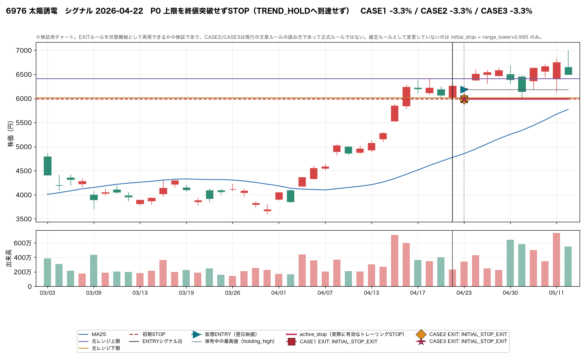
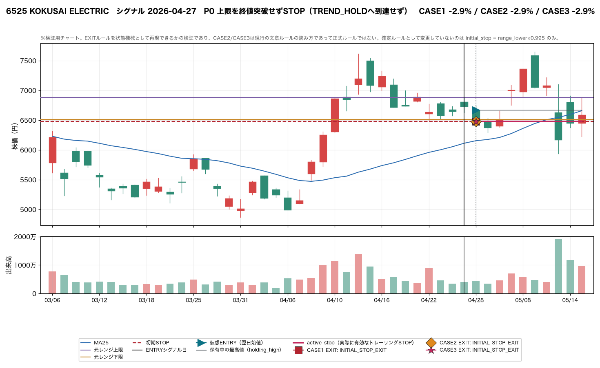
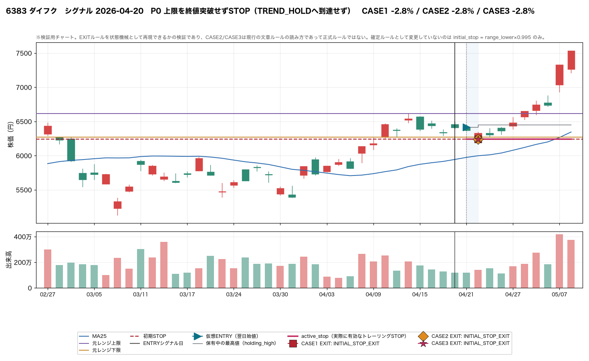
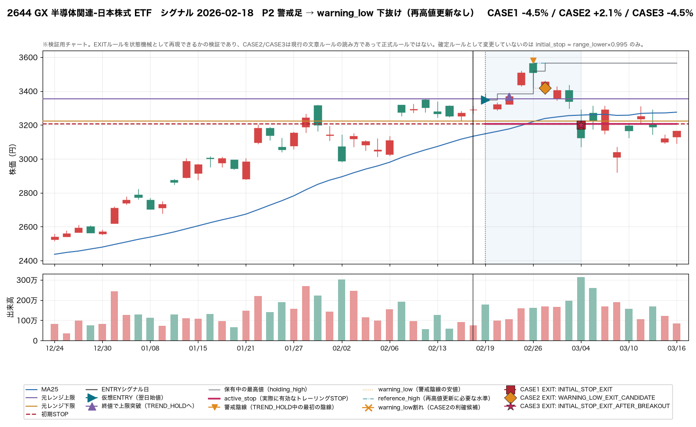
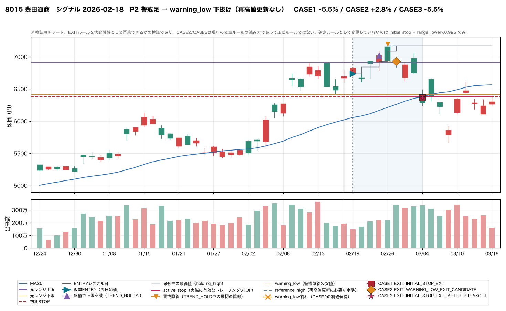
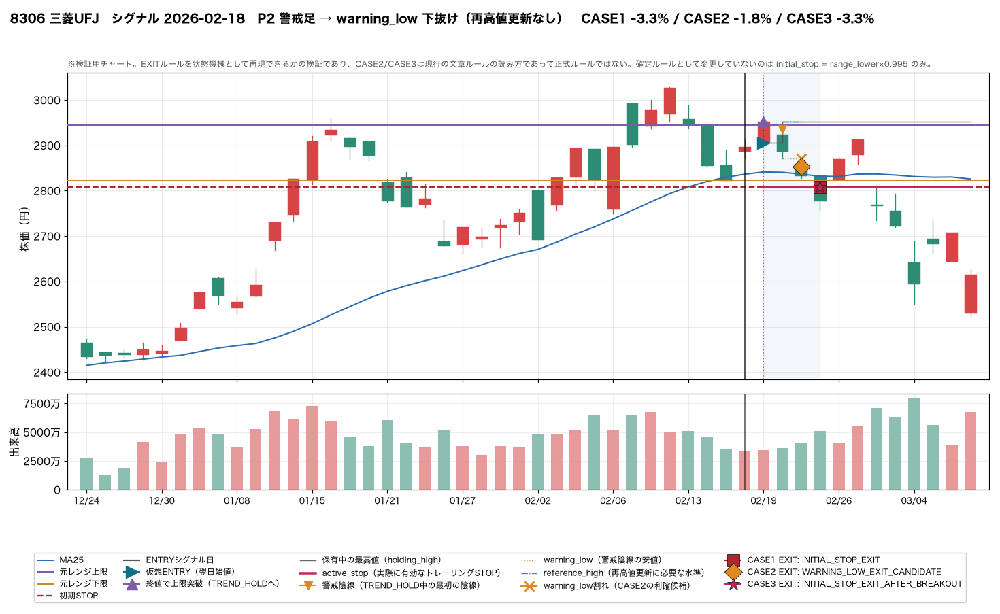
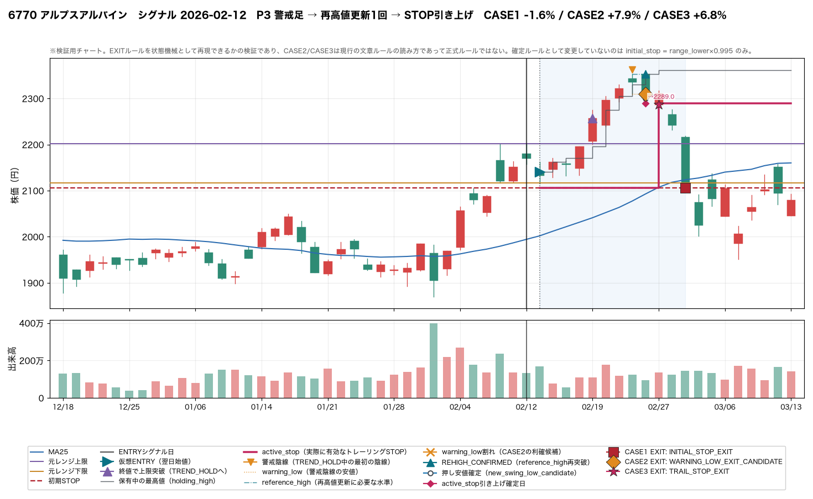
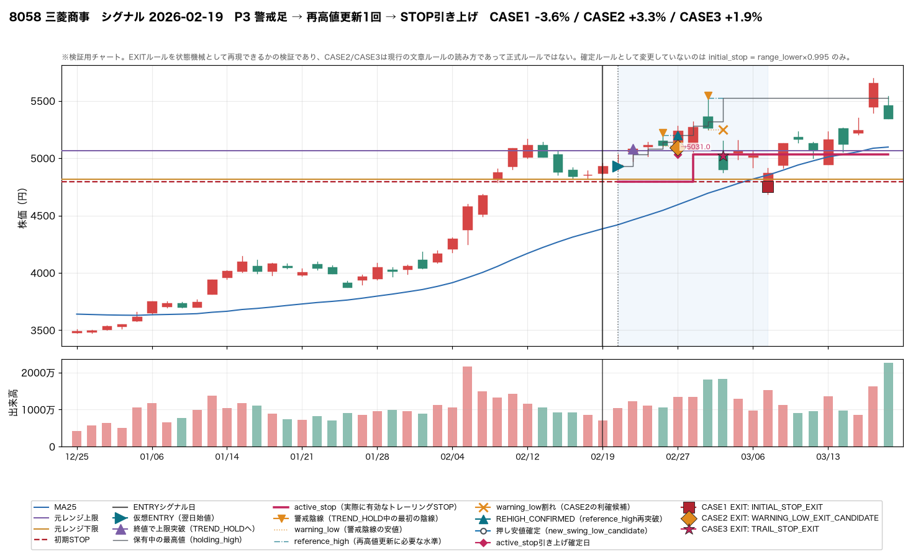
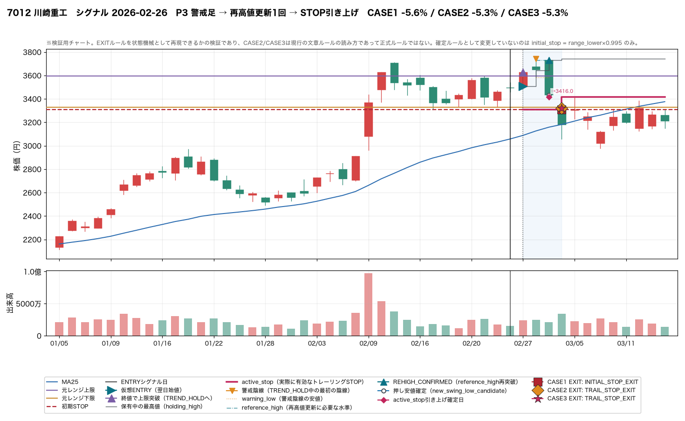


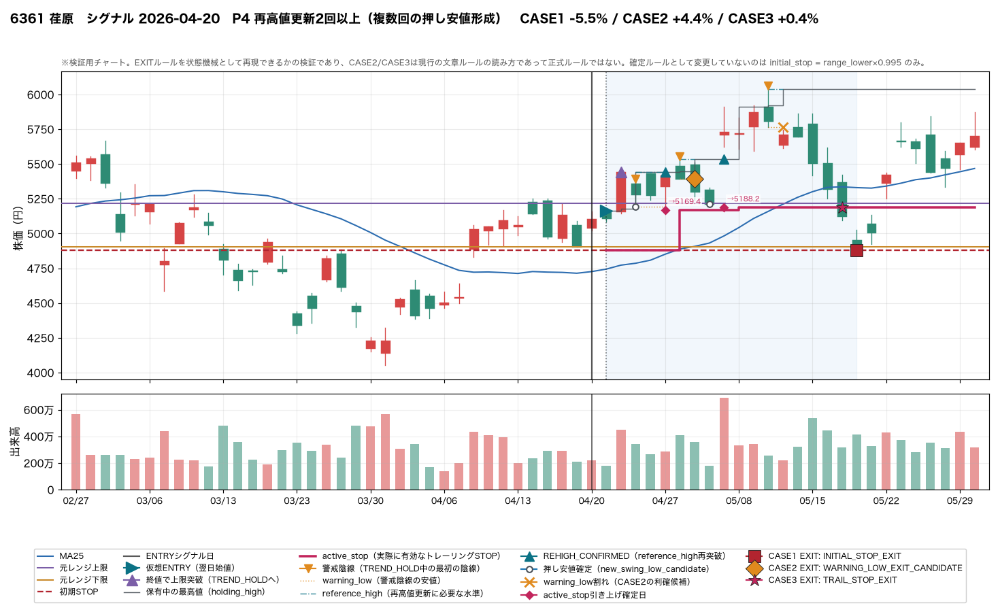
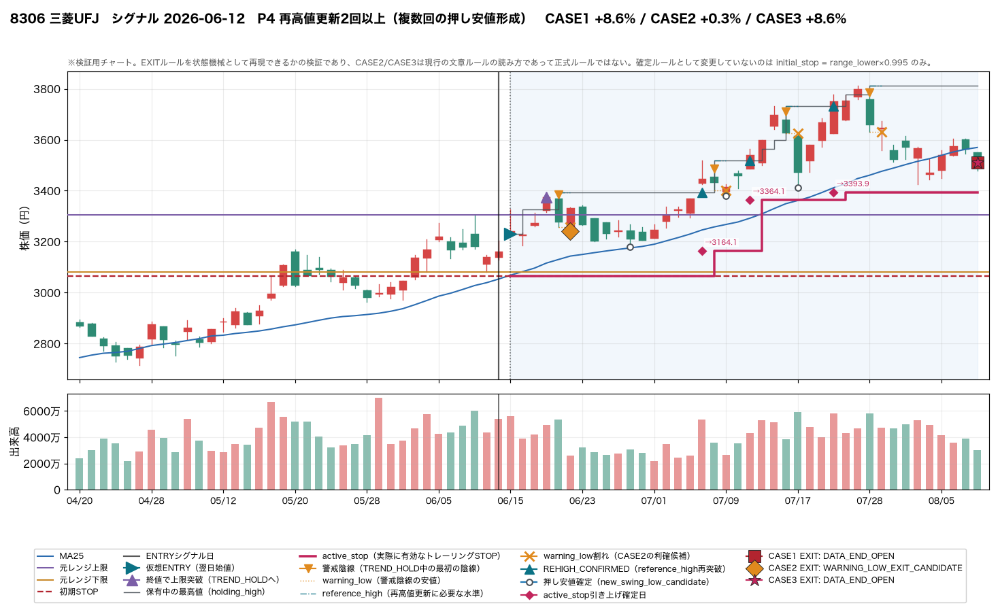
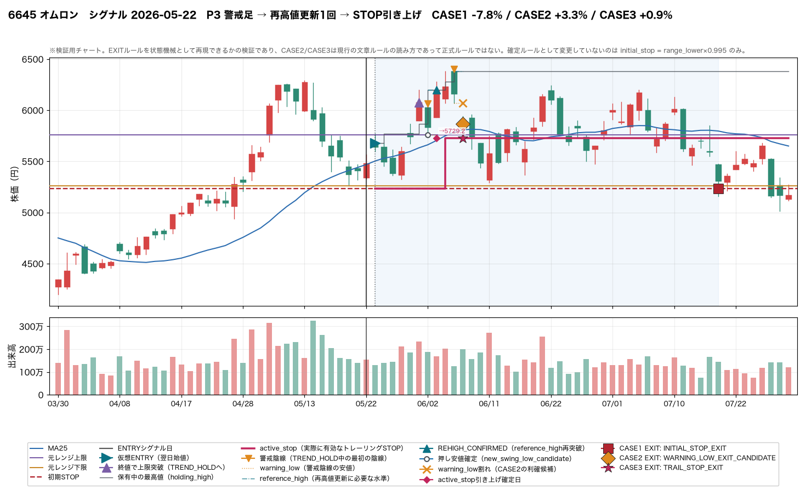


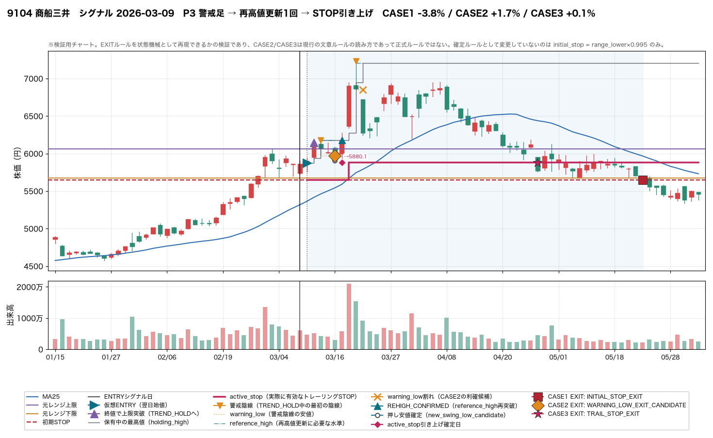

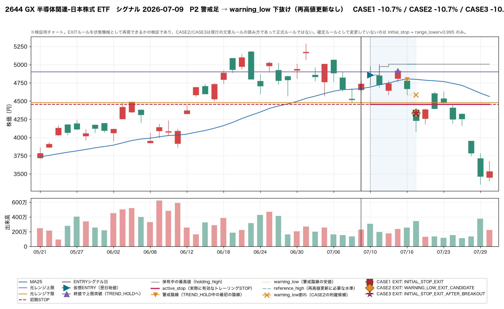


仮想ENTRY成立 32 件のうち TREND_HOLD へ到達（＝元レンジ上限を終値突破）したのは 22/32 (69%)。うち実際に警戒足が発生したのは 22/22 (100%)、警戒足の総数は 31 本。 警戒足の総数 31 本（前回は ENTRY 直後からの全陰線で 175 本）。ENTRY直後から全陰線を拾った場合の本数はこのレポート単体では持たないため、厳密な倍率比較はできない。上記の note にある前回件数との対比が唯一の手がかりであり、母数 32 件でこれだけをもって選別性能を断定することはできない。
reference_high = 警戒足発生までの保有中最高値 とすることで、「調整後の再高値更新」を自然に判定できるか警戒足 31 本の決着の内訳は、warning_low を先に割ったのが 25/31 (81%)、reference_high を先に更新できたのが 3/31 (10%)、同日に両方成立して順序不明が 3/31 (10%)。つまり「調整 → 再高値更新」という経路自体がほとんど発生していない。 原因は reference_high の取り方にある。警戒足のうち 12 本はその足自身が保有中最高値（残り 19 本は保有中の別の日の方が高い）で、この場合 reference_high は直近の天井そのものになるため、再高値更新には「その日のうちに天井を抜く」ことが要求される。実際、その 12 本のうち 7 本は最後まで高値を更新できず、トレーリングが再武装しないまま終わっている。 定義としては素直に動くが、天井の日に警戒足が出ると以後まったく機能しなくなるという偏りがある。
warning → reference_high再突破 → 期間中最安値を押し安値確定 という方法で、既存fractalより早く、かつlook-aheadなしでトレーリング候補を作れるか状態機械が確定した押し安値 12 件のうち、既存 fractal がそもそも押し安値と認めないものが 6 件（pivot 条件を満たさない）。両方が確定した 6 件で確定日を比べると、状態機械の方が早いのは 2 件、fractal の方が早いのは 3 件で、「fractal より早い」とは言えない。違いは速さではなく、fractal が拾わない押し安値も候補にできる点にある。 look-ahead が無いことは prefix 不変性テスト（打ち切り長を変えても先頭の結果が一致すること）で別途固定している。
trail（STOP引き上げ）が1回以上成立したのは 8/32 (25%)。 前回（既存 fractal 利用）は 参考A 2/32 / 参考B 10/32。この数字が前回の 2/32・10/32 と比べて改善したかどうかは、同じ32件の母集団かどうかに依存するため、母集団が異なる場合は単純な比較として読まないこと。
両方ある。 全体では CASE2 のリターン中央値 -1.82% が CASE3 の -3.77% を上回り（CASE2 が CASE3 を上回ったのは 18 件、逆は 1 件）、往復を避ける方向には効いている。 しかし「早く降りすぎか」は勝敗ではなく最大含み益のうちどれだけ取れたかで見る必要がある。 最大含み益が +10% 以上に達した 6 件では、CASE2 が取れたのは最大含み益の中央値 26%（CASE3 は 11%）にすぎない。 +5% 以上に達した 13 件でも中央値 26% にとどまる。 個別に見ると、CASE2 が大きく取り損ねた例と、逆に CASE2 が早降りしたせいで CASE1/CASE3 に大きく負けた例の両方がある（§3 の一覧と §10 の代表チャートを参照）。強い上昇を伸ばす目的には、この降り方は合っていない。
ほとんど減らせていない。 CASE1（初期STOPのみ）の吐き出し幅中央値 9.58pt に対し CASE3（トレーリング）は 9.00pt、リターン中央値も -4.51% → -3.77% とわずかな差にとどまる（CASE3 が CASE1 を上回ったのは 7 件）。 理由ははっきりしていて、そもそも trail が武装したのが 8/32 (25%) しかない。 CASE3 の EXIT で最も多いのは INITIAL_STOP_EXIT_AFTER_BREAKOUT（上限を突破したのに trail が一度も上がらず初期STOPまで戻った）で、この経路に入ると CASE1 と同じ結果になる。 トレーリングの仕組みそのものより、引き上げの起点である再高値更新が起きないことが効いている（Q2 参照）。
同日に warning_low割れと再高値更新の両方が成立し順序不明になったのは 3 件、同日にSTOP到達と再高値更新が重なったのは 0 件。warning_low を割ったのに解釈(b)によりWARNINGへ留まり続けたのは 13 件（STUCK_IN_WARNING）。再高値更新が2回以上のループになったのは 2 件（P4_REHIGH_MULTI）。CASE3がCASE1を上回ったのは 7 件、CASE2がCASE3を上回ったのは 18 件で、CASE間の優劣が固定的でないことが分かる。これらは複雑さ・不自然さの候補であり、§12（未確定のまま残った項目）で扱う。
上記の材料（選別性・再高値判定・fractal比較・trail成立率・吐き出し幅）を並べる限り、状態機械としては動くことが確認できた。一方で §12（未確定のまま残った項目）に挙げる複数の定義（警戒足の絞り込み、同日陰線の扱い、CASE3の滞留、4つ目のEXIT種別、ギャップ時の約定前提、大陰線例外の数値化）はまだ決まっていない。この検証は「採用すべき」という結論を出さない。定義が固まっていない状態で正式ルール化の可否を判断するのは時期尚早である。
§8（大陰線例外の参考指標）で挙げた実体幅/ATR・出来高倍率・安値引けの上位ケース、STUCK_IN_WARNING に該当した 13 件、順序不明フラグが付いた 3 件、再高値更新が複数回ループした 2 件が確認優先度の高い候補である。これらはいずれも代表チャート（§10）に含めることを想定した抽出基準。
頻度で見ると、同日陰線（解釈a）の該当は 5 件、CASE3のWARNING滞留（解釈b）は 13 件、4つ目のEXIT種別 INITIAL_STOP_EXIT_AFTER_BREAKOUT の発生は 14 件（CASE1〜3合算）。件数が多い項目ほど結果への影響が大きいと推測できるが、ここではどれを優先すべきかの推奨はしない。件数の内訳は §12 にまとめてあるので、そちらを判断材料にすること。
same_day_bearish_at_trend_entry
の合計 5 件として記録してある。定義次第で警戒足の総数が変わる。INITIAL_STOP_EXIT_AFTER_BREAKOUT は、CASE1〜3合算で
14 件発生している。これを独立したEXIT種別として扱うか、
初期STOP到達に統合するかは決めていない。gap_through_warning_low = 17 件）。
スリッページをどう見込むかは未定義のまま。manual_exit_review 用の参考指標。| ファイル | 内容 |
|---|---|
events.csv | 1行1イベントの追跡結果。CASE別のexit_type・リターン・最大含み益・吐き出し幅・警戒足/STOP引き上げの件数を含む。 |
state_timeline.csv | 状態遷移の全イベント（順序の生データ）。case列がCASE2のものはCASE2だけに効くイベント。 |
warnings.csv | 上限突破後の警戒足（WarningEpisode）全件。大陰線例外の参考指標とfractal比較列を含む。 |
stop_updates.csv | active_stop の引き上げ履歴。STOPは上方向にしか動かず、翌営業日から有効。 |
daily_state.csv | 各営業日の寄り時点で有効だった active_stop 等の状態（§11）。STOP引き上げを当日安値へ遡って適用していないことをここで確認できる。 |
case_comparison.csv | CASE1/2/3別の仮想EXIT比較。最も成績のよいCASEを採用するという結論は出していない。 |
summary.csv | 主要指標の集計値。 |
representative_charts/ | 代表チャート画像（カテゴリ別）。 |